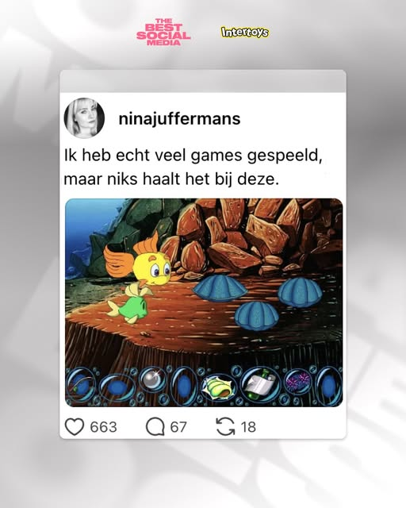
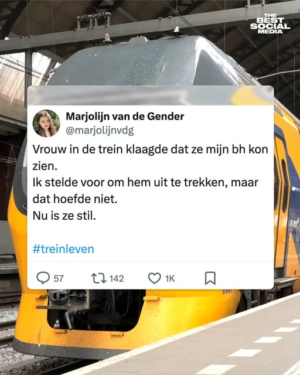

brand · digital
The Best Social Media NL
Visual identity · Figma design system
A refreshed social identity and a reusable Figma system used by five team members, including interns.



A system people can use
From specialist tools
to a shared way of working.
I moved the media team’s social production from Adobe-based workflows to reusable Figma templates for posts, Stories and TikTok layouts.
The system enabled non-designers to create consistent, on-brand content without advanced Adobe or Figma skills.